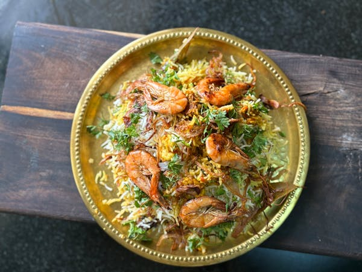

500 gram daging ayam atau kambing, potong dadu
2 bawang bombay, iris tipis
3 siung bawang putih, cincang
1 ruas jahe, parut
2 tomat, potong dadu
1 cangkir yogurt
1/2 cangkir minyak ghee atau minyak sayur
1 cangkir air
1/2 cangkir susu
1 sendok teh kunyit
1 sendok teh bubuk cabai merah
1 sendok teh jintan
1 sendok teh ketumbar bubuk
1 sendok teh garam
1 sendok makan bumbu garam masala
2 batang kayu manis
4 butir kapulaga
4 butir cengkeh
2 daun salam
1 genggam daun ketumbar dan daun mint, cincang
Segenggam kacang mete (opsional)
2 sendok makan kismis (opsional)
Air untuk merebus beras
2. Rebus Beras:> Rebus air dalam panci besar, tambahkan sedikit garam dan rempah-rempah seperti kayu manis, kapulaga, dan cengkeh. Masukkan beras dan masak hingga setengah matang (sekitar 5-7 menit). Tiriskan dan sisihkan.
3. Tumis Bumbu:> Panaskan minyak ghee atau minyak sayur dalam wajan besar. Tambahkan bawang bombay dan tumis hingga kecokelatan. Tambahkan bawang putih dan jahe, tumis hingga harum.
4. Masak Daging: Masukkan potongan daging, masak hingga berubah warna. Tambahkan tomat, yogurt, kunyit, bubuk cabai merah, jintan, ketumbar bubuk, garam, dan garam masala. Masak hingga daging empuk dan bumbu meresap.
5. Rakit Biryani:> Dalam panci besar atau oven-proof dish, lapiskan setengah dari nasi yang sudah setengah matang. Tambahkan campuran daging dan bumbu di atasnya. Taburkan daun ketumbar dan daun mint cincang. Lapiskan sisa nasi di atasnya.
6. Tambahkan Susu:> Campurkan susu dengan sedikit kunyit, lalu tuangkan di atas nasi untuk memberikan warna dan rasa.
7. Tambahkan Kacang dan Kismis (opsional): Taburkan kacang mete dan kismis di atas lapisan terakhir nasi.
8. Masak Biryani:> Tutup panci dan masak dengan api kecil selama 20-30 menit hingga nasi benar-benar matang dan semua rasa menyatu. Alternatifnya, bisa juga dipanggang dalam oven pada suhu 180°C selama 20-30 menit.
9. Sajikan: Setelah matang, aduk perlahan agar nasi dan daging tercampur rata. Sajikan panas dengan raita atau acar.
Biryani
Bahan-bahan
2 cangkir beras basmati500 gram daging ayam atau kambing, potong dadu
2 bawang bombay, iris tipis
3 siung bawang putih, cincang
1 ruas jahe, parut
2 tomat, potong dadu
1 cangkir yogurt
1/2 cangkir minyak ghee atau minyak sayur
1 cangkir air
1/2 cangkir susu
1 sendok teh kunyit
1 sendok teh bubuk cabai merah
1 sendok teh jintan
1 sendok teh ketumbar bubuk
1 sendok teh garam
1 sendok makan bumbu garam masala
2 batang kayu manis
4 butir kapulaga
4 butir cengkeh
2 daun salam
1 genggam daun ketumbar dan daun mint, cincang
Segenggam kacang mete (opsional)
2 sendok makan kismis (opsional)
Air untuk merebus beras
Instruksi
1. Siapkan Beras:> Cuci beras basmati hingga airnya jernih, lalu rendam dalam air selama 30 menit. Tiriskan.2. Rebus Beras:> Rebus air dalam panci besar, tambahkan sedikit garam dan rempah-rempah seperti kayu manis, kapulaga, dan cengkeh. Masukkan beras dan masak hingga setengah matang (sekitar 5-7 menit). Tiriskan dan sisihkan.
3. Tumis Bumbu:> Panaskan minyak ghee atau minyak sayur dalam wajan besar. Tambahkan bawang bombay dan tumis hingga kecokelatan. Tambahkan bawang putih dan jahe, tumis hingga harum.
4. Masak Daging: Masukkan potongan daging, masak hingga berubah warna. Tambahkan tomat, yogurt, kunyit, bubuk cabai merah, jintan, ketumbar bubuk, garam, dan garam masala. Masak hingga daging empuk dan bumbu meresap.
5. Rakit Biryani:> Dalam panci besar atau oven-proof dish, lapiskan setengah dari nasi yang sudah setengah matang. Tambahkan campuran daging dan bumbu di atasnya. Taburkan daun ketumbar dan daun mint cincang. Lapiskan sisa nasi di atasnya.
6. Tambahkan Susu:> Campurkan susu dengan sedikit kunyit, lalu tuangkan di atas nasi untuk memberikan warna dan rasa.
7. Tambahkan Kacang dan Kismis (opsional): Taburkan kacang mete dan kismis di atas lapisan terakhir nasi.
8. Masak Biryani:> Tutup panci dan masak dengan api kecil selama 20-30 menit hingga nasi benar-benar matang dan semua rasa menyatu. Alternatifnya, bisa juga dipanggang dalam oven pada suhu 180°C selama 20-30 menit.
9. Sajikan: Setelah matang, aduk perlahan agar nasi dan daging tercampur rata. Sajikan panas dengan raita atau acar.